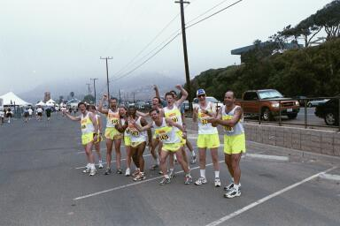

|
November 17 - Universal Studios Backlot 5/10K December 8 - Say No To Drugs! 5K/10K March 2003 - Los Angeles Marathon Next Race
Backlot Run 5K/10K. (USC/UCLA Rivalry Run was postponed). Leaving
ASHO steps 7 AM. Also, please do suggest favorite races for January
and February.
|
 The team cheering runners home at the finish Dolphin Run 5K/10K Perfect weather and dolphins romping in the ocean confirmed this race as a favorite. Carla Moxon, Lisa Miller, Peter Specker, Bruce Goodman, Bruce Gaines, Jane Rietman, Maggie Butterworth, Jamie Butterworth, Dick Orciuch, Mark Hamilton, Diane Christian, Skeeter Thomas, Burt Joseph, Alex Nunn, Pam Taylor, Bruce and Andre Untiedt made up the biggest team we've fielded this year. We did the traditional gathering at the finish to cheer team members in, with Lisa eliciting the biggest roar for some reason. Maggie looked fabulous, as always. Dicko took the Mr. Cool award in his shades. Our bright uniforms were visible for miles—created quite an impact! There were plenty of goodies for the runners at the end and Carla and others disseminated to public. Thank you to Bruce Nunn for taking photos. Division Winners: Alex Nunn took 2nd place and Andre Untiedt took 3rd! And Alex and Skeeter also ran sub-40 minutes with Burt hot on their heels. Race results: http://www.runningusa.org/index_results.html and click Brooks Dolphin Run |